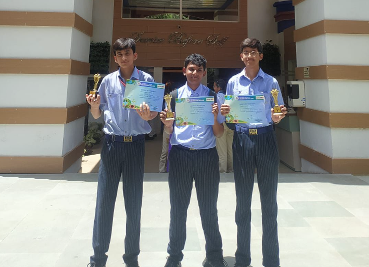
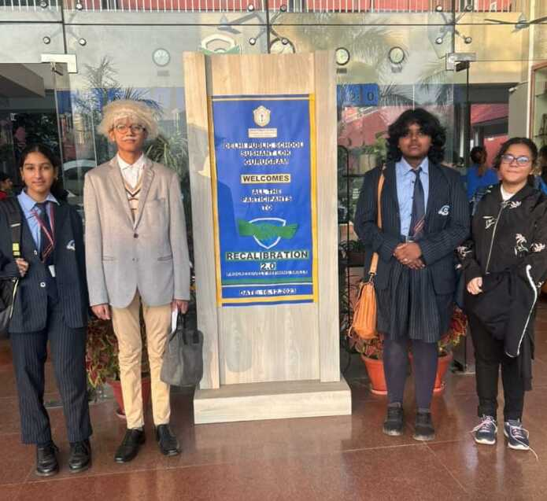
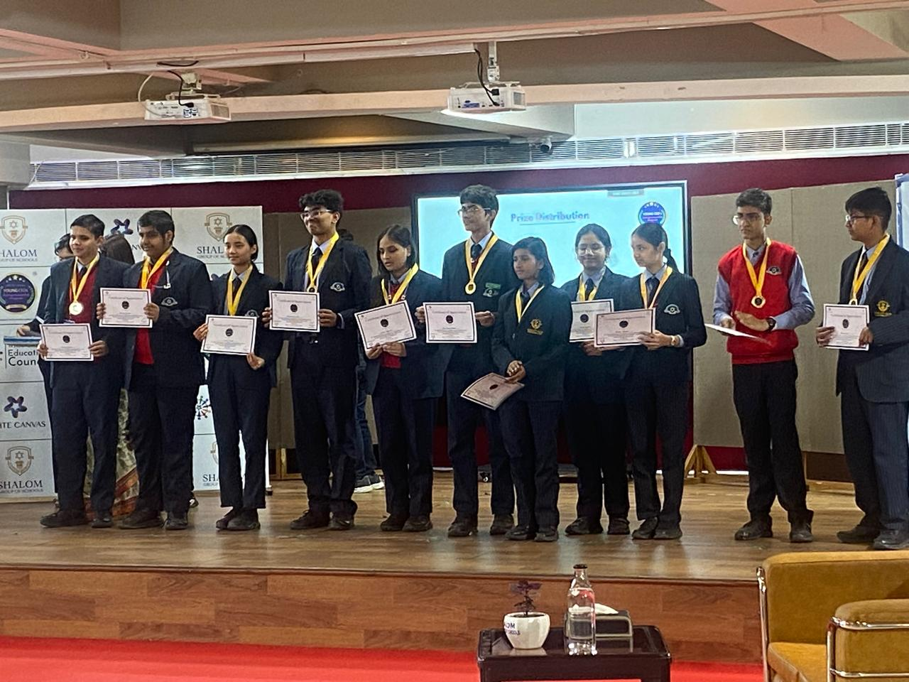
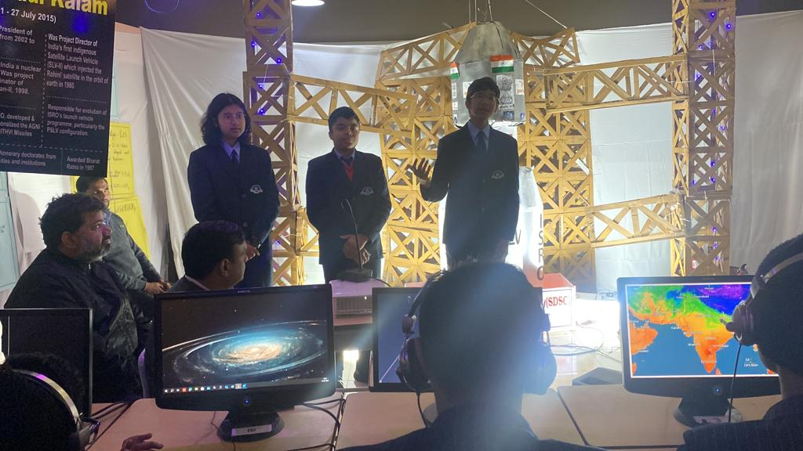
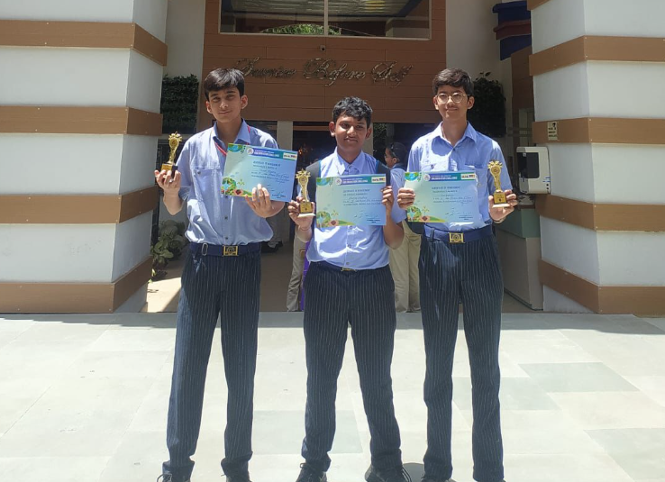
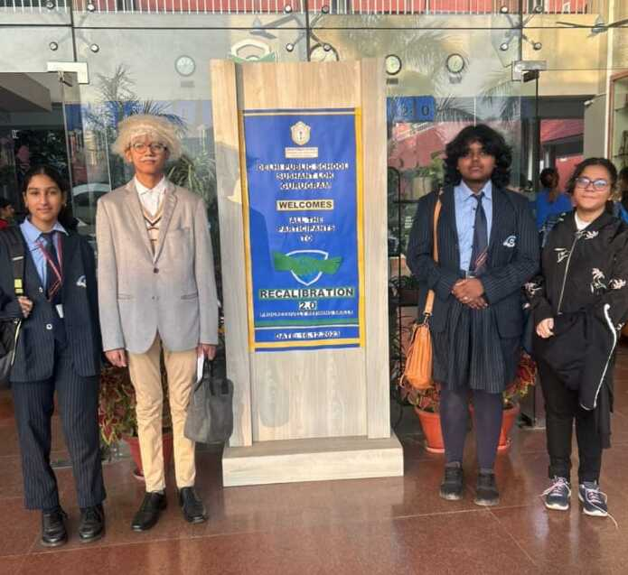
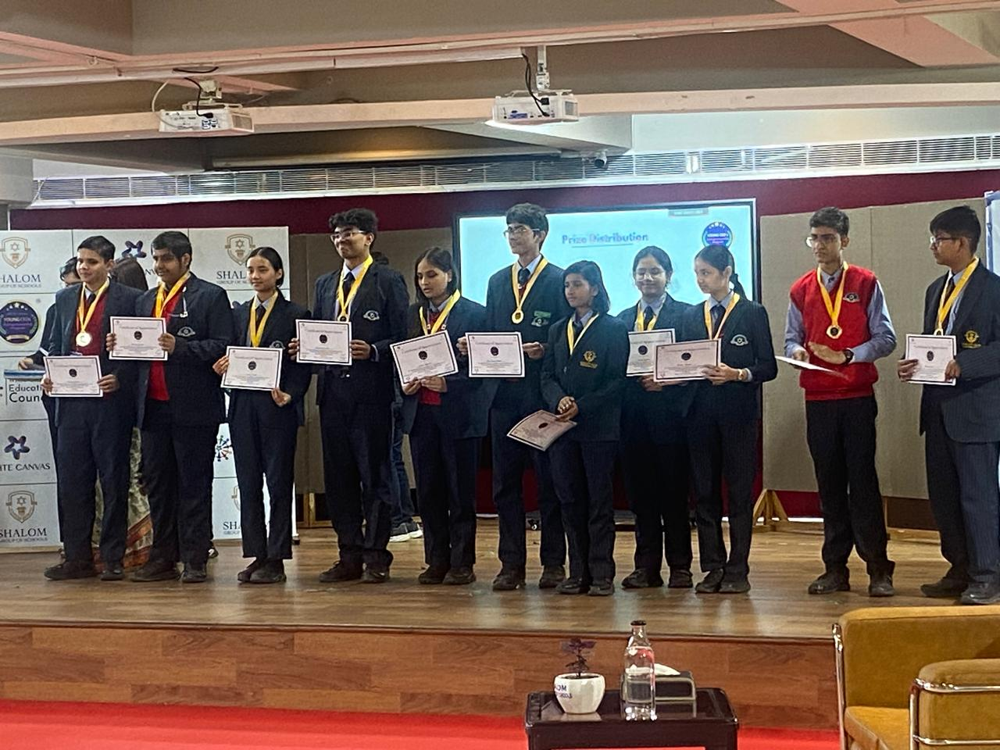
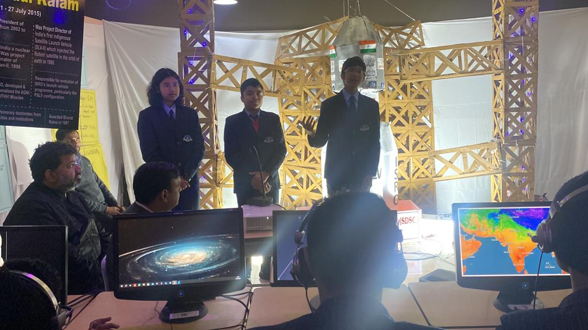

About Me
I'm a passionate designer, developer, and innovator, always looking for ways to merge creativity with technology. My graphic design journey began in grade 6 when I helped my mother create visuals for official school accounts, sparking my love for digital design. Since then, I've explored various creative and technical fields, from branding and web design to app development and hackathons. I've worked on projects like Newsify, an AI-powered news verification platform; VillageGuide, an interactive web app built with Firebase; and several branding and poster designs for FLO and the Young Poets Society. Whether it's designing impactful visuals, coding functional web applications, or writing poetry, I thrive on pushing creative and technical boundaries.
 







Started Graphic Design (Grade 6)
I began my journey with graphic design by helping my mother with visuals for school accounts. This is where my passion for design grew.
Learn More My WorkExplored Branding & Web Design
As I progressed, I explored web design and branding. It led me to build websites and design logos for various projects.
View ProjectsHackathon Achievements
Participating in hackathons helped me sharpen my problem-solving skills. I placed as a finalist in several hackathons.
View ProjectsAI-Powered News Verification
Newsify is an AI-powered platform to verify news and check its credibility. I developed it to address the spread of misinformation.
See ProjectVillageGuide Web App
VillageGuide is an interactive web app built with Firebase. It helps users discover local businesses and events.
Learn MoreFLO Branding and Poster Designs
I worked on branding and poster designs for the FLO organization. It helped me refine my skills in visual communication.
Learn More